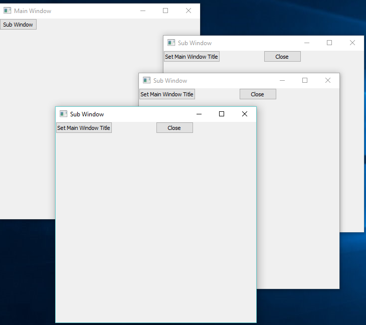

Objects Library for RingQt Application¶
In this chapter we will learn about the objects library for RingQt applications.
Ring 1.2 comes with the Objects library for RingQt applications. Instead of using global variables for windows objects and connecting events to objects using the object name, the Objects Library will manage the GUI objects and will provide a more natural API to quickly create one or many windows from the same class and the library provide a way to quickly set methods to be executed when an event is fired. Also the library provide a natural interface to quickly use the parent or the caller windows from the child or sub windows.
The Objects Library is designed to be used with the MVC Design Pattern.
The Objects Library is merged in RingQt so you can use it directly when you use RingQt
Library Usage¶
- Use the Open_Window(cWindowControllerClassName) function to open new Windows
- Create at least Two Classes for each window, The Controller Class and the View Class
- Create each controller class from the WindowsControllerParent Class
- Create each view class from the WindowsViewParent Class
- Use the Last_Window() function to get the object of the last window created (The Controller object).
- When you call a sub window, use the SetParentObject() method and pass the self object.
- In the View Class, To determine the event method use the Method(cMethodName) function.
- The Method(cMethodName) function determine the method in the controller class that will be executed.
- Each controller class contains by default the CloseAction() method that you can call to close the window.
- You don’t need to call the Show() Method for each window, When you use Open_Window() It will be called.
- In the view class, Define the GUI window object as an attribute called win.
Example¶
In the next example we will create two types of windows.
- Main Window contains a button. When the user click on the button a sub window will be opened.
- The User Can click on the button many times to open many sub windows.
- Each Sub Window contains Two buttons.
- The first button in the sub window change the Main and the Sub Windows Titles.
- The second button in the sub window close the Sub Window.
load "guilib.ring"
new qApp {
open_window( :MainWindowController )
exec()
}
class MainWindowController from WindowsControllerParent
oView = new MainWindowView
func SubWindowAction
Open_window( :SubWindowController )
Last_Window().SetParentObject(self)
class MainWindowView from WindowsViewParent
win = new qWidget() {
SetWindowTitle("Main Window")
btnSub = new qPushButton(win) {
setText("Sub Window")
setClickEvent( Method( :SubWindowAction ) )
}
resize(400,400)
}
class SubWindowController from WindowsControllerParent
oView = new SubWindowView
func SetMainWindowTitleAction
Parent().oView.win.SetWindowTitle("Message from the Sub Window")
oView.win.SetWindowTitle("Click Event Done!")
class SubWindowView from WindowsViewParent
win = new qWidget() {
SetWindowTitle("Sub Window")
btnMsg = new qPushButton(win) {
setText("Set Main Window Title")
setClickEvent( Method( :SetMainWindowTitleAction ) )
}
btnClose = new qPushButton(win) {
Move(200,0)
setText("Close")
setClickEvent( Method( :CloseAction ) )
}
resize(400,400)
}
The next screen shot after creating three sub windows.
The next screen shot after clicking on the button in each sub window.
Objects Library Source Code¶
The library source code is very simple, You can check the source code files
- https://github.com/ring-lang/ring/blob/master/extensions/ringqt/objectslib/objects.ring
- https://github.com/ring-lang/ring/blob/master/extensions/ringqt/objectslib/subwindows.ring
# List of objects (Windows/Forms)
$RingQt_ObjectsList = [] # Contains sub lists [object ID , Object]
# The Object ID Counter
$RingQt_ObjectID = 0
# Variable used for Windows/Forms object name - used for setting events
$RingQt_ObjName = ""
# The next constants for the Objects List
C_RINGQT_OBJECTSLIST_ID = 1
C_RINGQT_OBJECTSLIST_OBJECT = 2
/*
The next function create new object, add the object to the $RingQt_ObjectsList
Then set $RingQt_ObjName to the object in the $RingQt_ObjectsList
Then call the start() method
*/
func Open_Window cClass
$RingQt_ObjectID++
$RingQt_ObjectsList + [$RingQt_ObjectID,""]
$RingQt_ObjName = "$RingQt_ObjectsList[Get_Window_Pos("+$RingQt_ObjectID+")]" +
"[C_RINGQT_OBJECTSLIST_OBJECT]"
cCode = $RingQt_ObjName + " = new " + cClass + nl +
$RingQt_ObjName + ".start()"
eval(cCode)
/*
The next function return the last window created
*/
func Last_Window
return $RingQt_ObjectsList[len($RingQt_ObjectsList)][C_RINGQT_OBJECTSLIST_OBJECT]
/*
The next function for using in GUI controls events
*/
func Method cMethod
cMethod = Trim(cMethod)
if right(cMethod,1) != ")" {
cMethod += "()"
}
return $RingQt_objname+"."+cMethod
/*
The next function get the Window ID
Then search in the Objects List to find the Window Item Position
*/
func Get_Window_Pos nID
return find($RingQt_ObjectsList,nID,C_RINGQT_OBJECTSLIST_ID)
/*
The next class is the parent class for Windows/Forms Classes
When you create a new class, just use from WindowsBase
When you close the window just use Super.Close()
*/
class WindowsControllerBase
nID = $RingQt_ObjectID
func Close
nPos = Get_Window_Pos(nID)
del($RingQt_ObjectsList,nPos)
func ObjectID
return nID
func GetObjectByID nID
return $RingQt_ObjectsList[nID][C_RINGQT_OBJECTSLIST_OBJECT]
class WindowsControllerParent from WindowsControllerBase
nParentID # Goal Designer Object ID
func Start
oView.win.Show()
func setParentObject oParent
nParentID = oParent.ObjectID()
func Parent
return GetObjectByID(nParentID)
func CloseAction
oView.Close()
Super.Close()
class WindowsViewParent
func Close
win.close()